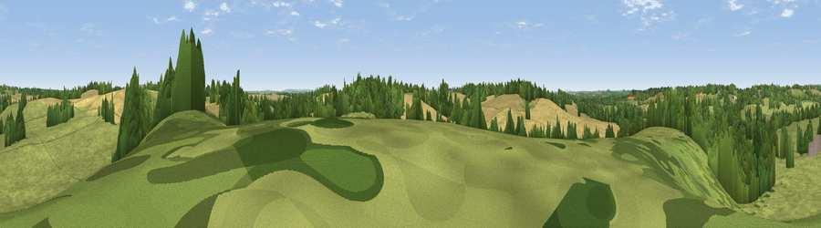

Viewpoint near Langley
#41857 in England · top 89% of its area beats it · near LangleyWhere it is
The exact computed spot (SP 19775 61975). Click the marker for map links.
The view, rendered

A 360° render of this exact spot computed from the terrain model, tree cover and land cover — summer colours, afternoon light, calibrated against photographs of famous viewpoints. Real trees, hedges and buildings will differ in detail.
The panorama
Grey silhouette: terrain skyline in each direction (720 bearings, Earth curvature and refraction included). Dashed green: skyline with trees (+15 m) and buildings (+8 m) as obstacles. Blue strip: how far the ground is visible on each bearing.
Where the view opens
Wedge length = distance to the farthest visible ground on that bearing (vegetation-aware). Rings at 10, 25 and 50 km.
What fills the view
47% grassland · 34% cropland · 19% woodland ·
Angular shares of the visible panorama (visual magnitude), not map area. Landscape diversity 0.47 (0–1 Shannon).
Key numbers
More beautiful places nearby
The staircase of upgrades: each row has a higher view potential than everything closer. Driving times are estimates from straight-line distance, calibrated against real road routing — check an actual route before setting out.
| Place | Direction | Drive | Score |
|---|---|---|---|
| Viewpoint near Norton Lindsey | E · 3 km | ~6 min | 43.1 |
| Viewpoint near Tiddington | SSE · 5 km | ~11 min | 48.6 |
| Bordon Hill | SSW · 8 km | ~16 min | 59.0 |
| Lodge Hill | W · 9 km | ~17 min | 64.0 |
| Viewpoint near Meon Vale | S · 17 km | ~29 min | 77.0 |
| Broadway Hill | SSW · 27 km | ~43 min | 77.7 |
| Viewpoint near Elmley Castle | SW · 32 km | ~49 min | 80.5 |
| Bredon Hill | SW · 32 km | ~50 min | 83.0 |
52.25559, -1.71172 · source: screening · position refined by local search. Computed location — check access rights before visiting.